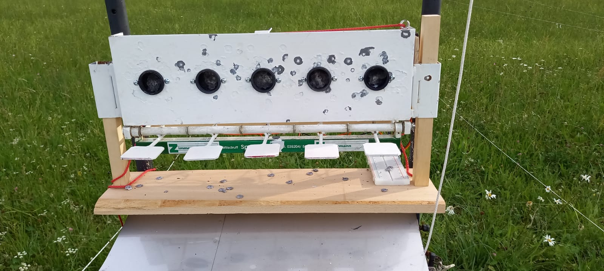

Automatische Scheibenanlage
Website Informationen
Diese Website dient als Anzeigeoberfläche einer komplett automatisierten Biathlon Scheibenanlage. Diese entstand infolge eines Projekts im Fach Programmieren 2, an der Hochschule Kempten.
Die Anzeige der Schussergebnisse wird sowohl in einem Diagramm als auch in einer Auflistung angezeigt. Diese ermöglicht eine umfassende Analyse der Schussleistung hinsichtlich der zeitlichen Regelmäßigkeit, Schnelligkeit und Trefferquote.
Unter dem Link Funktionsweise wird der Mechanische-, Elektronische- und Softwareseitige Aufbau erläutert.
Die Scbeibenanlage wurde von den Studenten Lena Haslach und Marco Deuritz entwickelt.
